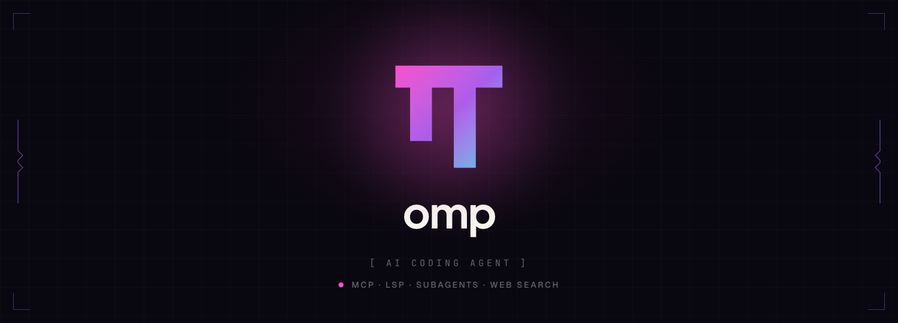

01
界面与提示本地化
覆盖设置中心、首次启动、模型思考等级、常用操作和关键状态；动态错误和命令保留必要原文。
非官方简体中文本地化分支 · 持续同步上游
oh-my-pi-cn（也可搜索 ohmypi-cn，npm 包名为 omp-cn）保留上游完整能力， 聚焦中文界面、供应商配置、安装更新和真实跨平台体验。
Windows · macOS · Linux · Bun ≥ 1.3.14
$ bun install -g omp-cn
已安装 omp-cn，命令：omp
$ omp
欢迎使用 Oh My Pi 中文版
TypeScript + Rust
MCP · LSP · DAP · Subagents
独立 npm 与 Release
01 / 为什么是中文分支
从首次安装到模型登录、设置、提示和升级，重要步骤都以中文表达，同时让上游核心能力保持可追踪、可合并。
01
覆盖设置中心、首次启动、模型思考等级、常用操作和关键状态；动态错误和命令保留必要原文。
02
通过 omp-cn、安装脚本或 Release 安装，更新器和包身份都指向中文分支。
03
核心逻辑、接口、依赖和测试语义以上游为准，中文差异集中在本地化和发行边界。

02 / 安装
如果已经全局安装官方包，请先卸载；官方包和中文包都会提供 omp 命令，不建议同时保留。
03 / 参与维护
中文校对、平台验证、供应商文档、上游新增文本审查都能直接改善真实用户体验。
OPEN SOURCE · MIT
安装、使用、验证，或者修好一个小地方。每一种参与都会让下一位中文开发者少绕一点路。